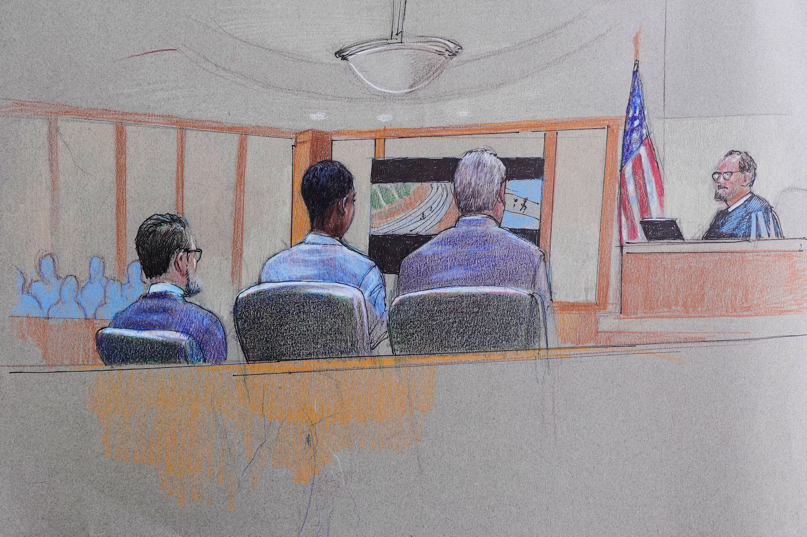

RFK Announces Fight on Lyme Disease
With goal to reduce lyme disease 25% by 2035.

With goal to reduce lyme disease 25% by 2035.
60 day ceasefire ends, both sides say they are ready to end fighting
This week week brought the end of the ceasefire. United States Vice President JD Vance claims that the Iran nation is crippled militarily and economically. One of Iran's Presidents Masoud Pezeshkian recently called for an end. President Donald Trump states that he expects peace talks rapidly.
This week as more Moroccans crossed into the Spanish city of Cueta, they met a stronger security force, with some invaders being turned away. Citizens of Cueta however have seen no support with many thousands of invaders still allowed to remain in the city. Some residents say they fear safety and depending on the Spanish government to help secure the city.
The English village of Piddington (population approximately 350) successfully voted to leave the United Kingdom after hearing the government plans to house over 1000 migrant men near the city.
This referendum is scheduled for September 15th, although it is largely symbolic as there is no way to succeed from the United Kingdom without Parliamentary approval.
The village intends to present these results to local authorities and potentially the U.S. Embassy.
Elon Musk has publicly endorsed the villages decision on X, saying "Will happen to all of Britain unless there is fundamental political change".
A new judge, Michael Chitty has until August 24th to rule on the motion of a retrial for the previously convicted murderer Karmelo Anthony.
The former judge John Roach was recused this week for stating that the jury "got it right" in the original trial.
Anthony's defense stated that this demonstrated a lack of impartiality.
The defense's motion for retrial claims that the original trial had a lack of access to the public and that the jury was not properly informed on self defense.
During the ongoing motion for retrial, additional information was released to the jury and to the public, including Anthony's text messages which show violent fantasies and express intent to stalk and murder his now ex-girlfriend.
"When I stab somebody I'm gonna lick their blood off the blade.", Anthony's text read.
Hours before the track meet, Anthony sent a picture of his knife to his ex-girlfriend and stated that he was "lowkey on the verge".
She then reported this to a school vice principle but reportedly no action was taken.
Passing the California Assembly 57-19, AB 2624 will criminalize the online posting of images or information of people who "feel threatened". California republicans have dubbed this the "Stop Nick Shirley Act" and argue that this protects criminals and hinders free speech. While the bill awaits signature from Governor Gavin Newsom, many suspect that even if signed, the bill will be struct down judicially for violating freedom of speech. If passed the bill will warrant a minimum fine of four thousand dollars per violation.
Lt. Governor Hosemann removed Derrick Simmons from a select committee tasked with redrawing election maps.
This came after Simmons and others wrote a letter to Hosemann stating their desire that the election maps not be redrawn.
The state legislature typically redraws voting districts every 10 years based off of US Census data.
However, the recent Supreme Court ruling in Louisiana v. Callais has granted more opportunity for states to redraw districts as they see fit.
A joint House and Senate committee is determining how districts should be redrawn and Governor Reeves is expected to call a special session on redistricting this year.
A mixed used residential development is coming to Fortification Street at the former YMCA.
This 9 acre area will begin with approximately 60 single family residential units.
Phase 2 will add a five story mid rise building containing over 100 additional units
The site will feature many amenities including padel courts, a similar game to pickleball.
Jackson City Counsel and Mayor John Horne all expressed strong support for this development.
This development brings a beginning to the Jackson Riverfront District, planned with the US Army Corps of Engineers flood control widening project along the pearl river nearby Downtown Jackson.
Unlike traditional gambling which faces heavy regulation from both state and federal oversight,
"prediction markets" such as Kalshi and Polymarket allow users to gamble on sports, next weeks weather, and much more.
This type of betting faces little regulation, as it is classified as a federally regulated financial exchange, an investment tool.
But to an 18 year old, this type of gambling is no less different, and no less addicting.
While a gambling app would face state regulations, these "prediction markets" face no state regulations, allowing users as young as 18 to gamble money whenever and however they please.
Social media site Bluesky reports a loss of over 50% of active users since it's peak in 2024.
The site originally saw fame as an alternate to Elon Musk's purchase of Twitter (now X) in 2024 and continued to be known for its heavy moderation against conservative thought.
As a prime example of how modern liberal ideology can cannibalize itself, Bluesky's administration faced reports of hate speech from the user base.
"But you, Timothy, are a man of God; so run from all these evil things. Pursue righteousness and a godly life, along with faith, love, perseverance, and gentleness."
1 Timothy 6:11
What does it mean to pursue righteousness?
Far too often in life we focus on the negative, making it our goal to rid ourselves of sin.
This while unsuccessful, is also inefficient. The goal must not only be to forsake sin, but firstly to pursue righteousness.
This leads the active fight against wickedness instead of being on the defensive.
In spite of our sin, we can all be righteous through Christ's sacrifice on the cross.
Not for anything we have done, but because of Christ's death and resurrection for us.
Christ sacrificed for us while we were still wicked so that we could be atoned with God.